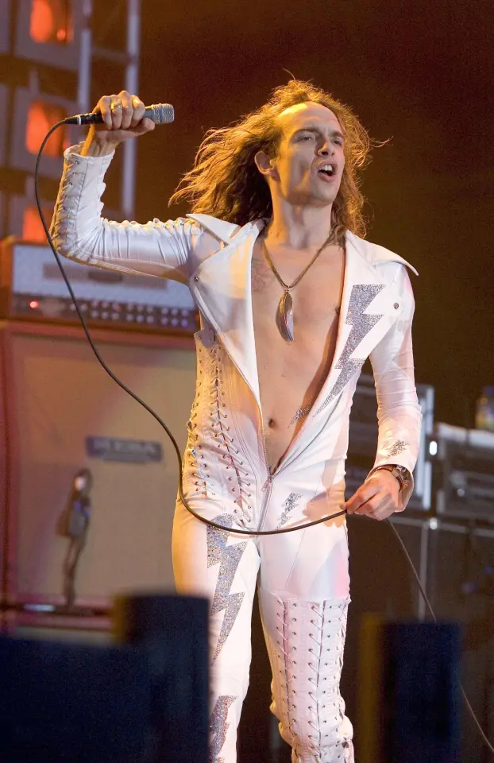
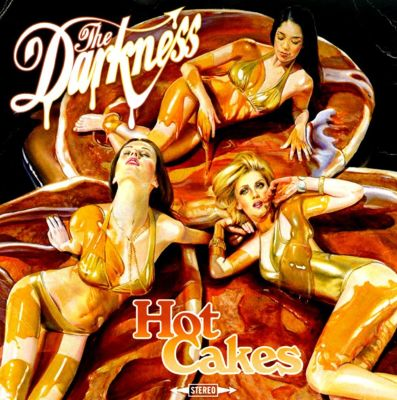
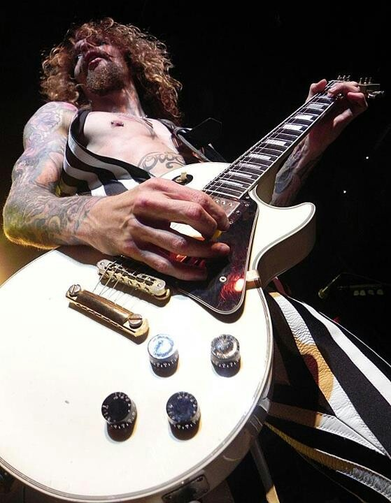

Musician · Singer · Guitarist · Frontman of The Darkness
JUSTIN HAWKINS
English musician Justin Hawkins is the founder, lead singer and lead guitarist of The Darkness — the glam-rock band behind “I Believe in a Thing Called Love.” Renowned for a five-octave voice, a wardrobe of spandex catsuits and a Gibson Les Paul held like a lightning rod, Hawkins has spent over two decades turning arena rock into a punchline you can headbang to.
- ~5Octave vocal range
- 8Studio albums with The Darkness
- 1975Born in Chertsey, Surrey
- 600K+YouTube subscribers

01 — The story so far
Who is Justin Hawkins?
Justin David Hawkins (born 17 March 1975 in Chertsey, Surrey) is an English musician, singer-songwriter and internet personality best known as the founder, lead vocalist and lead guitarist of The Darkness. Raised in Lowestoft, Suffolk, alongside his younger brother and future bandmate Dan Hawkins, Justin built a career on an unlikely combination: the theatrical scale of 1970s arena rock, the vocal acrobatics of Freddie Mercury, and a self-aware British sense of humour that never lets the leather trousers take themselves too seriously.
A sibling rivalry that became a band
Justin and Dan Hawkins grew up trading guitar licks in a friendly sibling rivalry that pushed both brothers to learn the instrument young. They played in various university bands together — with Dan, not Justin, originally taking lead vocals in an early progressive-rock project — before the pair met drummer Ed Graham and decided to start something new.
Jingles, IKEA and a very lucrative advert
Before arena tours, Hawkins paid the bills writing and performing advertising jingles for brands including IKEA and Yahoo! through the late 1990s and early 2000s. He has said the money from a popular IKEA commercial he wrote and sang helped bankroll The Darkness' breakthrough debut album — proof that flat-pack furniture and glam rock have more in common than you'd think.
Permission to Land and instant infamy
The Darkness signed to Atlantic Records after building a following on the London pub and club circuit. Their debut album, Permission to Land, arrived on 7 July 2003, shot to number one on the UK Albums Chart, and went on to sell more than 1.3 million copies in the UK alone. Singles "I Believe in a Thing Called Love," "Growing on Me" and "Love Is Only a Feeling" turned Hawkins' falsetto and skin-tight catsuits into inescapable early-2000s pop culture.
Burnout, rehab and a solo detour
Following a heavier, more divisive second album, One Way Ticket to Hell... and Back (2005), constant touring and substance use took their toll. Hawkins completed rehabilitation for alcohol and cocaine abuse and left The Darkness in October 2006, later forming the hard-rock outfit Hot Leg and releasing synthpop material under the alias British Whale.
Reunion, reinvention and Rides Again
The Darkness reunited in 2011 and have released new albums roughly every two to three years since, including Hot Cakes (2012), Last of Our Kind (2015), Pinewood Smile (2017), Easter Is Cancelled (2019), Motorheart (2021) and Dreams on Toast (2025). In 2021, Hawkins launched the YouTube channel Justin Hawkins Rides Again, where his technical song breakdowns and comedic commentary have built an audience of hundreds of thousands and introduced him to a generation who never saw the catsuit the first time around.
02 — Career in order
Justin Hawkins career timeline
From pub gigs in Lowestoft to arena tours in 2026 — the key dates in Justin Hawkins' musical career, presented in the order they actually happened.
- 2000
The Darkness forms
Justin and Dan Hawkins team up with drummer Ed Graham and bassist Frankie Poullain in Lowestoft, playing pubs and clubs before signing to Atlantic Records.
- 2003
Permission to Land
The Darkness' debut album hits number one in the UK, driven by "I Believe in a Thing Called Love." Justin's falsetto and catsuits become a national talking point.
- 2004
Triple BRIT win
The band wins Best Group, Best Rock Group and Best Album at the BRIT Awards, plus two Kerrang! Awards.
- 2006
Hawkins departs
After completing rehab for alcohol and cocaine abuse, Justin leaves The Darkness, citing exhaustion with the band's routine.
- 2008
Hot Leg formed
Hawkins launches hard-rock band Hot Leg, releasing the album Red Light Fever in 2009.
- 2011
The Darkness reunites
Original line-up (with Frankie Poullain back on bass) reforms for Download Festival and beyond.
- 2012–2021
Five more studio albums
Hot Cakes, Last of Our Kind, Pinewood Smile, Easter Is Cancelled and Motorheart keep the band touring the world.
- 2020
The Masked Singer UK
Hawkins competes disguised as "Chameleon," delighting fans with his vocal range long before his reveal.
- 2021
Justin Hawkins Rides Again
Hawkins launches his YouTube channel, mixing technical song breakdowns with comedic music-industry commentary.
- 2022
Taylor Hawkins Tribute Concert
Justin performs alongside Wolfgang Van Halen, Dave Grohl, Brian Johnson and members of Queen.
- 2025
Dreams on Toast
The Darkness release their eighth studio album, followed by extensive UK and European touring.
- 2026
Arena tour & 51st birthday
Justin turns 51 and The Darkness announce their largest UK arena tour in twenty years for December.
03 — The instrument nobody expected
A five-octave voice
Justin Hawkins is widely praised for his musical abilities, particularly a vocal range said to span roughly five octaves — from a full chest baritone up into a piercing, Mercury-indebted falsetto. Press Play on any row below to hear the note and get a feel for just how much ground that voice covers.
How that stacks up
Vocal range figures are commonly cited approximations from music press and fan sources, not lab-measured data.
04 — The catalogue
Justin Hawkins & The Darkness discography
Eight studio albums and counting — the full-length releases Justin Hawkins has written, sung and played guitar on with The Darkness.

One Way Ticket to Hell...and Back

Hot Cakes

Dreams on Toast
Also released: Last of Our Kind (2015), Pinewood Smile (2017), Easter Is Cancelled (2019), Motorheart (2021), plus live albums, EPs and the box set catalogue. Full listing on Wikipedia's Darkness discography.
05 — Beyond The Darkness
Bands and projects
The Darkness
Justin's main band since 2000, formed with brother Dan Hawkins. Known for glam-inflected hard rock, falsetto hooks and a live show built on splits, spandex and sincere devotion to 1970s rock excess.

Hot Leg
Formed in 2008 during Hawkins' time away from The Darkness. Released one studio album, Red Light Fever (2009), full of tongue-in-cheek riff-rock. Currently on hiatus.

British Whale
Hawkins' synthpop alter ego, active since 2005. Its debut single, a cover of Sparks' "This Town Ain't Big Enough for Both of Us," reached the UK top 10.

Justin Hawkins Rides Again
Launched in 2021, this YouTube channel pairs genuinely sharp music-theory breakdowns with comic timing. It has passed 600,000 subscribers and tens of millions of views. Watch on YouTube ↗
06 — Tools of the trade
Guitars, amps and the gear behind the sound
Hawkins plays Gibson Les Paul Customs almost exclusively, most iconically an alpine white model seen in the "I Believe in a Thing Called Love" and "Love Is Only a Feeling" videos. In 2004, Gibson issued a limited run of Justin Hawkins signature Les Paul Customs finished in Silverburst and Pinkburst sparkle, now prized by collectors.
Amp-wise, he has moved through Mesa/Boogie Dual and Triple Rectifiers, Cornford heads during the Hot Leg era, EVH and Wizard amps between 2016 and 2021, and Laney JH3000 heads paired with Marshall 1959 reissues since The Darkness' current run.
- Guitars: Gibson Les Paul Custom (alpine white, ebony), custom Atkins Mindhorn & JH3001
- Amps: Laney JH3000, Marshall 1959 Plexi reissues, Mesa/Boogie Rectifiers (past)
- Signature model: 2004 Gibson Justin Hawkins Les Paul Custom, Silverburst/Pinkburst
- Other instruments: Moog Keytar for select songs; Martin Backpacker travel guitar on his YouTube channel

07 — Off stage
Personal life and fun facts
Straight-A class clown
Justin and Dan Hawkins were both strong students at school, though Justin was also known for clowning around in class.
Vegan
Hawkins follows a vegan diet, a detail that regularly comes up in interviews and on his YouTube channel.
Football fan
He supported Manchester United growing up but is now primarily a Norwich City supporter.
The Masked Singer UK
In 2020, Hawkins competed on the show disguised as "Chameleon," using his range to keep viewers guessing.
Songwriter for hire
He has co-written songs for Meat Loaf, including "Love Is Not Real" and "California Isn't Big Enough."
Based in Switzerland
Hawkins has spoken about living in Switzerland with his daughter, splitting his time between family life and touring.
08 — Frequently asked
Justin Hawkins FAQ
Justin Hawkins is an English musician, singer, guitarist and songwriter, born 17 March 1975 in Chertsey, Surrey. He is the founder, lead singer and lead guitarist of the rock band The Darkness, and is known for his wide vocal range and flamboyant stage persona.
Justin Hawkins is the founder and lead singer of The Darkness, the British rock band behind "I Believe in a Thing Called Love." He has also fronted Hot Leg and recorded as the synthpop project British Whale.
Justin Hawkins is widely described as having a vocal range spanning roughly five octaves, moving between a deep chest voice and a piercing falsetto reminiscent of Freddie Mercury.
Yes. Justin Hawkins left The Darkness in October 2006 after completing rehabilitation for alcohol and cocaine abuse, citing exhaustion with the band's routine. The Darkness reunited with Justin in 2011 and have released new music and toured regularly ever since.
Justin Hawkins Rides Again is Justin Hawkins' YouTube channel, launched in 2021, where he gives comedic, technically detailed breakdowns of songs, reacts to new music and shares commentary on the music industry.
Justin Hawkins is closely associated with Gibson Les Paul Custom guitars, most famously an alpine white model, and has also used custom Atkins Mindhorn and JH3001 guitars on stage.
Yes. Dan Hawkins is Justin's younger brother and the rhythm guitarist of The Darkness. The brothers grew up together in Lowestoft, Suffolk, and both learned guitar as children.
Before The Darkness, Justin Hawkins wrote and performed advertising jingles, including a well-known IKEA commercial. He has said the earnings helped fund The Darkness' breakthrough debut album, Permission to Land, released in 2003.
09 — Further reading
Sources and further reading
This page is a fan-built reference. For deeper reading and to verify details, see the primary sources below.
- Justin Hawkins — Wikipedia
- The Darkness (band) — Wikipedia
- The Darkness discography — Wikipedia
- The Darkness — official website
- Justin Hawkins Rides Again — official YouTube channel
- The Darkness — AllMusic biography
- Justin Hawkins — Guitar.com artist profile
- Justin Hawkins interview — The Creative Independent